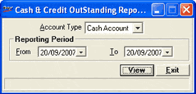

This module allows generation of cash and credit outstanding report based on the Account Type and Reporting Period specified by the user.
How to reach: Cash > Franchisee A/C > Franchisee Outstanding
The cash & credit outstanding report window is displayed.

Account Type: Select the required account type, i.e., Cash Account and Credit Account from the drop down list. Based on the selection, the Cash/ Credit Outstanding report is generated.
Reporting Period: Specify the period for which the report has to be generated.
From: Specify the starting date from which the cash/ credit outstanding data needs to be captured in the report. The date can be entered or selected from the drop down list.
To: Specify the end date up to which the cash/ credit outstanding data needs to be captured in the report. The date can be entered or selected from the drop down list.